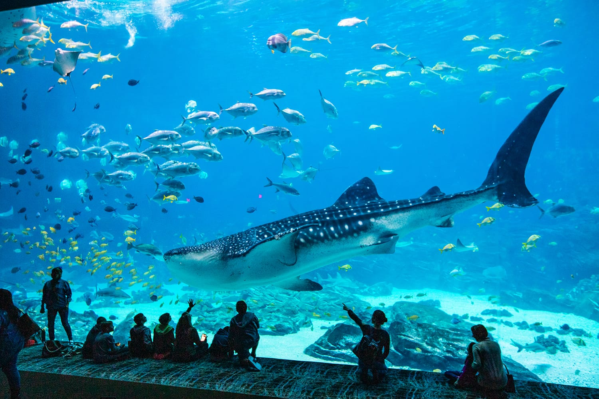
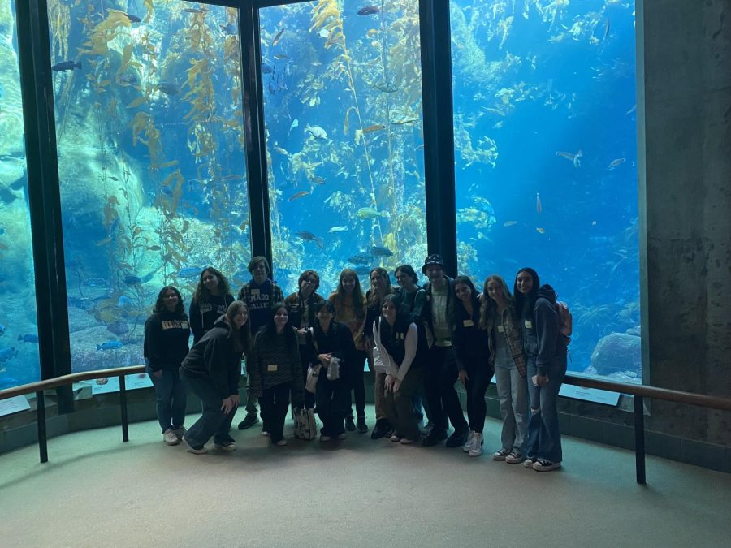

SCHOOL VISITS
School Visits Guided programs are offered from Sunday to Thursday with three daily one hour sessions: 8:30 am – 9:30 am, 10:00 am – 11:00 am, & 11:30 pm – 12:30 pm
" Duration of guided visit/program: an hour
"Guided tours are offered daily
"Teacher’s guided booklets are available
"Guided programs can accommodate 105 students per session, with an open capacity for self-guided visit
"Visit goodies vary by program
"Free entry for one teacher per every 10 kids (4+ years), or 1 teacher per every 5 kids (under 4 years)
"Discount vouchers are given to teachers and students for their next visit!

"Everything is arranged for you so you enjoy an easy, stress-free and enjoyable excursion